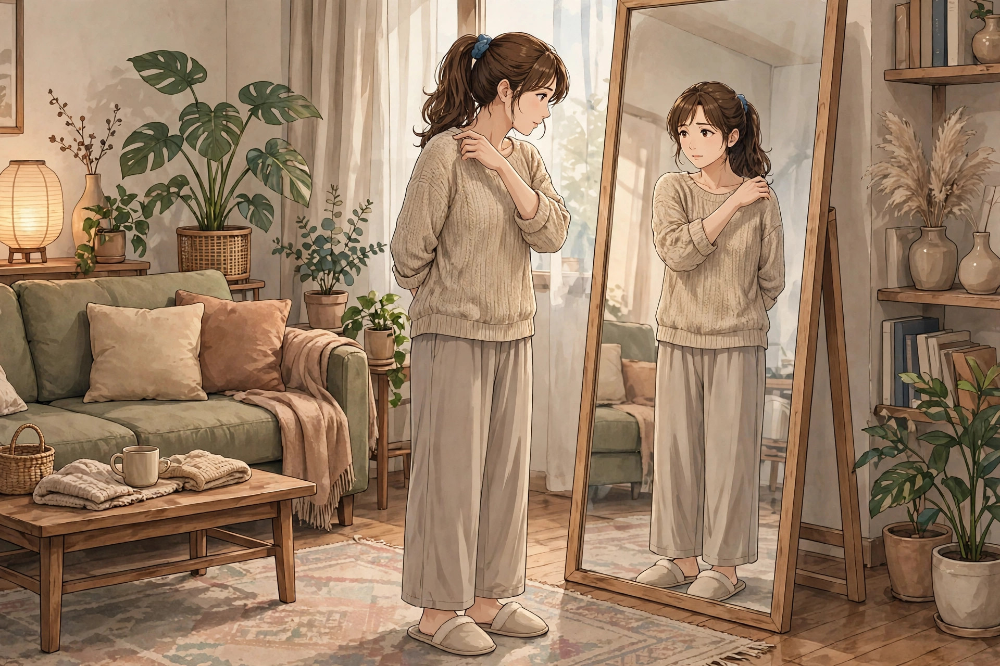
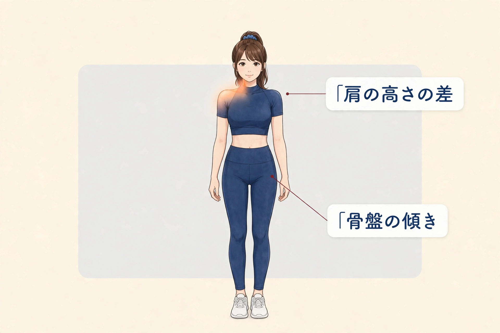

肩の高さの左右差
美容整体ステラ・ポラリス東三国｜大阪市淀川区東三国・東三国駅徒歩5分・女性向け

左右で違う肩の高さを整えて、まっすぐなシルエットへ
鏡の前でふと気づく、左右の肩の高さの違い。バッグをいつも同じ側の肩にかける、片側に体重をかけて立つ、デスクで肘をつく向きが決まっているなど、日常の何気ないクセが積み重なると、片方の肩だけが上がったままになりやすいと言われています。肩の高さがそろわないと、首のラインや服の落ち感にも影響しやすく、写真に写った自分の姿勢に驚く方も少なくありません。このページでは、肩の高さに左右差が出る背景と、肩のラインがそろって見える状態を目指す当サロンでのケア、ご自宅でできるセルフケアをご案内します。まずは下のチェックで、ご自身の状態を確かめてみてください。
ご予約はこちら（Coubic）こんなお悩みありませんか
- 鏡を見ると、片方の肩が明らかに高く見える
- バッグはいつも同じ側の肩にかけている
- ブラウスやジャケットの肩が、片側だけずり落ちやすい
- 片方の肩だけがこりやすく、重さに左右差を感じる
- 立っているとき、片方の足に体重をかけがちだ
- 写真に写ると、首が少し傾いて見えることがある
- 高いほうの肩は、力を抜こうとしても下がりにくい
当てはまる項目が多いほど、体の使い方の左右差が姿勢に表れている目安とされています。肩の高さは、肩そのものだけでなく、骨盤や背骨の土台の傾きとも関わります。次のセルフチェックで、ご自身の肩のラインの傾向を確かめてみましょう。
簡単セルフチェック（肩のラインのセルフチェック）
鏡の前にまっすぐ立って、肩の位置関係を見る簡単な方法です。
- 鏡の前に自然に立ち、両腕を下ろして力を抜きます。両肩のてっぺんを結ぶラインが、床と比べて傾いていないかを見ます。
- 耳と肩の距離を左右で比べます。距離が短い側は、肩を持ち上げる筋肉が働きっぱなしになっている目安と言われています。
- つぎに骨盤の左右の出っ張りに手を当て、高さに差がないかも確認します。肩と骨盤の両方が傾いている場合は、土台側からの見直しが向いている目安になります。
※これは診断ではありません。ご自身の状態の傾向を知る目安としてお使いください。
肩の高さの左右差の原因と仕組み
肩をすくめる筋肉の左右差
肩の高さを決める大きな要素が、首から肩にかけての僧帽筋や肩甲挙筋といった、肩を持ち上げる筋肉の張り具合です。片側だけが縮んだまま固まると、その側の肩が引き上げられた状態で固定されやすくなります。図1のように、肩のラインの傾きは、筋肉の張りの左右差と骨盤の傾きが重なって表れることが多いとされています。

図1 肩のラインの傾きは、肩まわりの筋肉の張りの左右差と、土台である骨盤の傾きが重なって表れます。体の状態には個人差があります。
土台になる骨盤と背骨の傾き
肩は、背骨と骨盤という土台の上に乗っています。骨盤が左右に傾くと背骨もわずかに傾き、そのバランスを取るために片方の肩が上がることがあります。脚を組むクセや、片側に重心をかけて立つ習慣が続くと、土台の傾きが定着しやすく、肩だけを意識しても戻りにくい状態になりがちです。
日常の片寄った使い方
バッグを同じ肩にかける、子どもを同じ側の腕で抱く、車の運転やデスクワークで片側の肘に頼るなど、日常の片寄りは少しずつ積み重なります。利き手側の筋肉ばかりが使われて張りが強くなる一方で、反対側は支える力が弱くなり、左右差が目立ちやすくなると言われています。
見え方と疲れやすさへの広がり
肩の高さがそろわない状態では、高い側の首や肩に負担が集中しやすく、こりや重さを片側だけに感じやすくなります。また、首のラインが傾いて見えたり、デコルテの広がりが左右で違って見えたりと、見た目の印象にも関わります。土台と筋肉の両方から整えることが、左右のバランスを取り戻す近道になります。
セルフケアで足りる場合・サロンケアが向く場合
鏡で見てわずかに気になる程度で、肩こりなどの重さも片側に強くない場合は、まずバッグのかけ方を変えるなど、日常のクセの見直しとセルフケアから始める方法があります。一方で、高い側の肩が自分では下ろせない、片側のこりや重さが続く、骨盤の傾きも気になるという場合は、サロンでのケアが向いている目安になります。サロンでは、張りの強い側をゆるめるだけでなく、骨盤や背骨の土台から整え、肩のラインがそろって見える状態を目指します。今の状態に合わせて選ぶことが大切です。
当サロンでのケア
当サロンの肩の左右差ケアは、「肩のラインがそろい、首がまっすぐ伸びて見える姿勢」を目指す組み立てです。まず肩と骨盤の高さを一緒に確認し、張りの強い側と土台の両方にアプローチできるよう、3つの手技を組み合わせます。
美容整体：骨盤と背骨のラインを整え、肩がまっすぐ乗りやすい土台をつくることを目的に。肩甲骨の動きも引き出し、左右のバランスが整った立ち姿を目指すお手伝いをします。
アロマオイルマッサージ：張りの強い側の首すじから肩、肩甲骨まわりをオイルでゆるめ、左右の張り具合の差がやわらぐ状態を目指します。香りに包まれながらほぐれる、リラックス感の高いケアです。
もみほぐし：盛り上がって固くなりやすい高い側の肩の上部や首の付け根をほぐし、肩がストンと下りる感覚を目指して進めます。
ケアを通して目指すのは、こんな変化です。
- 肩のラインがそろい、鏡で見てまっすぐに見える姿勢へ
- 高い側の肩が下りて、首が長くすっきり見える状態へ
- 片側に寄っていた重さがやわらぎ、両肩が軽く感じる状態へ
- 骨盤から背骨までの土台が整い、立ったときの安定感へ
- 左右どちらの肩でもバッグをかけやすい、偏りの少ない状態へ
施術の仕上げには、肩を下ろす感覚のつかみ方と、バッグのかけ方や立ち方のちょっとした工夫もお伝えします。左右差は日常のクセから生まれるため、施術と日常の見直しを合わせることが、そろったラインを保つ土台になります。強さは途中でも調整できますので、遠慮なくお声がけください。

施術の流れ
ご来店後、気になる部位やお悩み、ご希望の強さなどをうかがいます。完全個室のため、周りを気にせずお話しいただけます。
肩の高さと骨盤の傾き、首の動きなどを一緒に確認し、張りの強い側と土台のどちらを中心に進めるか、その日の状態に合わせてご案内します。
美容整体を中心に、ご希望に応じてアロマオイルマッサージ、もみほぐしを組み合わせて進めます。強さは途中でも調整できます。
施術後の状態を確認し、ご自宅で続けやすいセルフケアのポイントをお伝えします。次回の目安についても、ご希望があればご案内します。
料金
| コース | 通常価格 | キャンペーン価格（12/25まで） |
|---|---|---|
| 80分 | 8,000円 | 3,000円 |
| 100分 | 10,000円 | 4,000円 |
| 120分 | 12,000円 | 5,000円 |
クリスマスキャンペーンは12月25日まで、ご新規様もリピーターの方も対象です。施術内容は当日の状態とご希望に合わせて組み立てます。
ご自宅でできるセルフケア
- バッグの持ち替え習慣：バッグは左右交互の肩にかける、リュックを使う日を増やすなど、片側への負担を分散させるのが目安です。
- 肩の上げ下げ体操：高い側の肩を耳に近づけて5秒キープし、ストンと下ろします。左右各5回、力みの抜ける感覚を覚えるつもりで行ってください。
- 骨盤リセットの立ち方練習：壁に背中をつけて立ち、後頭部・背中・お尻・かかとをつけた姿勢を30秒キープ。まっすぐな土台の感覚を体に覚えさせる練習です。
- 胸を開くストレッチ：ドアの枠に前腕をつけ、体を少し前に傾けて胸の前を伸ばします。左右20〜30秒を2セット、痛みのない範囲で行います。
ご自宅でのケアに：セルフケア資料ライブラリ（無料）
このお悩みに合わせたセルフケアの考え方を、無料の資料ライブラリでご紹介しています。
セルフケア資料ライブラリを開く →
受診の目安
肩の高さの差に加えて、腕や手のしびれ・力が入りにくい感じがある場合や、ケガのあとから急に姿勢が変わった場合、発熱を伴う首や肩の痛みがある場合は、施術の前に医療機関への受診をおすすめします。痛みが日ごとに強くなる場合も、まずは医療機関でご相談ください。
よくある質問
Q. 初めてでも大丈夫ですか？
はい。当サロンは完全予約制・完全個室で、1日3組までのご案内です。最初にカウンセリングで肩と骨盤の高さ、姿勢のクセをうかがい、無理のない内容から始めます。施術の前後で鏡を見ながら「肩のラインがそろった感じがする」といった変化を一緒に確認しながら進めますので、初めての方も安心してご利用いただけます。
Q. 左右差はどのくらいで整いますか？
左右差の出方や日常のクセの強さによって、感じ方には個人差があります。一度の施術でも「肩が下りた」「首がまっすぐになった感じがする」と実感される方はいらっしゃいますが、クセそのものは日々の積み重ねでできているため、日常の持ち方や立ち方の見直しと合わせることが、整った状態を保つうえで大切です。
Q. コースはどう選べばいいですか？
80分・100分・120分のコースがあり、ケアしたい部位の広さやお時間のご都合に合わせて選べます。肩の左右差のケアで、骨盤から背中、首や肩までゆっくり整えたい方には、100分が選ばれることが多いコースです。迷われる場合は、ご予約の際にお気軽にご相談ください。
Q. 場所と予約方法を教えてください。
大阪市淀川区東三国、東三国駅から徒歩5分です。完全予約制のため、予約サイト（Coubic）またはLINE公式アカウントからご予約をお願いしています。
Q. 男性も受けられますか？
当サロンは女性向けのため、男性の方は、同じ東三国の男性専用整体院「北辰堂」をご案内しています。
施術者について
平賀建人（施術歴30年）
鍼灸師・登録販売者・アロマセラピスト・パーソナルトレーナーの資格を持ち、美容整体を中心に、アロマオイルマッサージ、もみほぐしを、その日の状態とご希望に合わせて組み合わせて施術します。このページの内容は、施術者の知識と経験をもとに作成しています。

料金・ご予約
ご新規様もリピーターの方も 12/25まで
80分 3,000円／100分 4,000円／120分 5,000円
通常価格は80分8,000円／100分10,000円／120分12,000円です。施術内容はご希望に合わせて組み立てます。
営業時間：月〜土 17:00〜23:00／日 10:00〜23:00（完全予約制）｜電話：080-2468-3086
大阪府大阪市淀川区東三国2丁目25番4号101（東三国駅徒歩5分）
専門解説で詳しく見る
仕組みから詳しく知りたい方は、専門解説シリーズのこちらの記事もあわせてご覧ください。